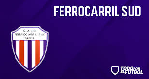

Menu

Desde que asumieron la dupla técnica al conjunto aurinegro aún no conocen lo que es la victoria. El último partido, santa consiguió un solo punto y sigue siendo el último en la tabla de posiciones. Ahora debe viajar a Buenos Aires a jugar contra el conjunto cervecero
El conjunto comandado por Gerardo Villar cayó contra velense 2 por 1, el único gol del "rojine" fue marcado por Ignacio Castro y siguen sin poder volver al nivel que los llevó a jugar la final el año pasado contra santamarina
Ferro se quedó con el clásico tandilense, derrotó 3 a 0 a Santamarina por la séptima fecha del torneo local de Primera A y siguen luchando por quedarse con la punta del campeonato
| NOMBRE |
|---|